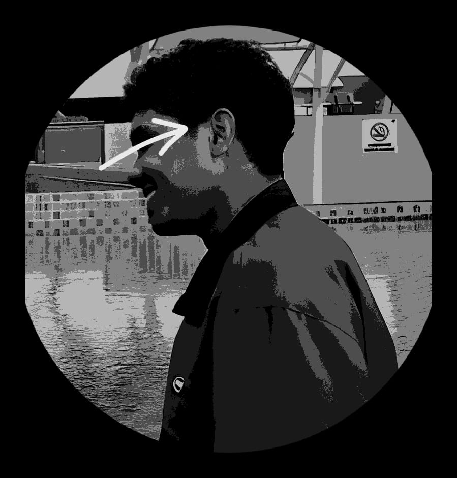
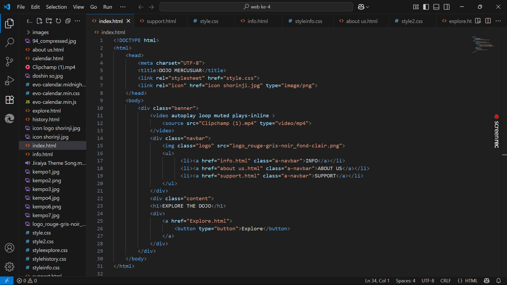

Halo, saya Kang Shua 👋
Dari Kupang, saya merajut kode dan cerita mencari bentuk digital yang jujur pada akar.
Mahasiswa yang belajar lewat percobaan kecil, menata UI seperti lanskap: sederhana, tapi penuh jejak.
ꦩꦠꦸꦂ ꦱꦸꦏ꧀ꦱ꧀ꦩ — matur suksma
ꦏꦁꦱ꧀ꦱꦸꦮ ꦏꦸꦥꦁ ꦏꦸꦤ꧀ꦛ ꦲꦶꦤ꧀ꦠꦸꦤ꧀ ꦲꦶꦁ UI ꦲꦶꦤ꧀ꦠꦸꦤ꧀ꦏꦸꦥꦸꦁ
Skill & Tools

HTML & Semantic Structure
Bangun fondasi web yang rapi dan SEO-friendly.

Advanced CSS
Animasi, layout responsif, dan microinteractions.

JavaScript Interaktif
Draggable UI, scroll logic, dan cinematic overlay.
Pekerjaan & Showcase
2d, 3d, dan branding lokal.

coding dan UI interaktif.
Kontak

Email:
Kangshua25@gmail.com
Kirim ide, feedback, atau project proposal.